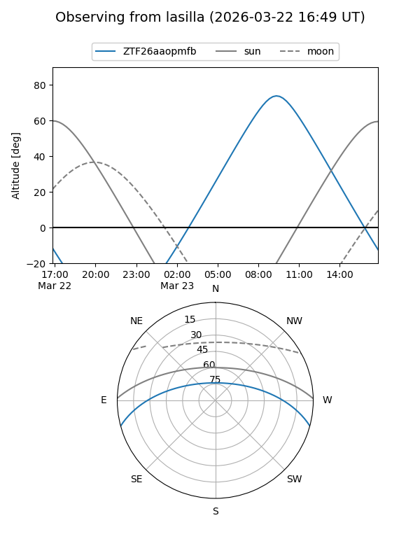
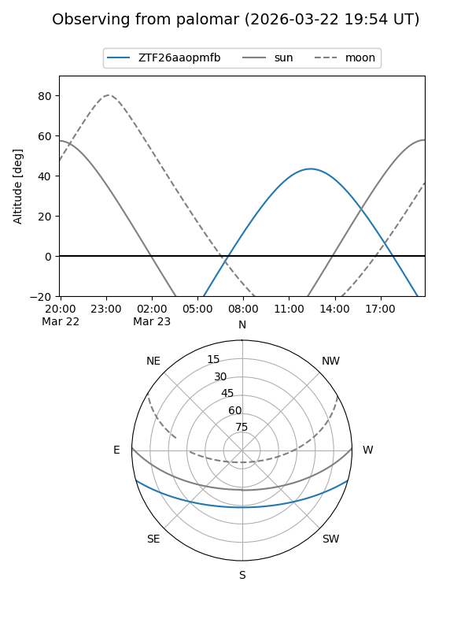

ZTF26aaopmfb
Target ZTF26aaopmfb at 2026-03-22 14:11
Aliases and brokers:
FINK: link
Lasair: link
ALeRCE: link
alt names
ZTF26aaopmfb (ztf,fink_ztf)
Coordinates:
equatorial (ra, dec) = 249.9834,-13.11201
equatorial (HMS+DMS) = 16:39:56.01,-13:06:43.22
galactic (l, b) = (4.4940,+21.53498)
Flags:
Photometry:
last ztfg=17.60
1 ztfg detections
Lightcurve
Visibility


Additional plots